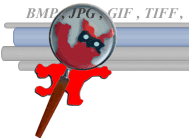
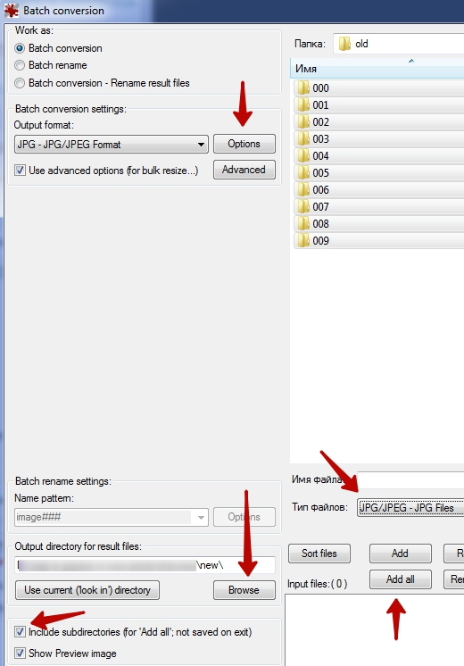
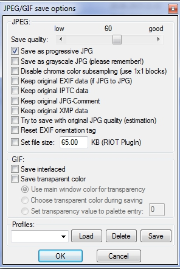
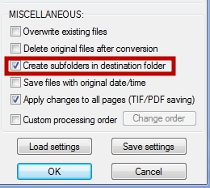

Пакетное сжатие JPEG-изображений в нескольких директориях
Оптимизаторы в работе нередко сталкиваются с необходимостью быстро сжать большое количество изображений.
Это необходимо:
- для увеличения скорости загрузки страницы;
- для улучшения оценки в тесте PageSpeed Insights от Google.
Массовое сжатие .jpg изображений, расположенных в нескольких директориях, реализовывал при помощи программы IrfanView. Программа может как перезаписать старые изображения, так и создать папки в новом месте. Названия папок при этом сохранятся. IrfanView видит и обрабатывает также вложенные директории.
Методика
- 1. Скачиваем программу. Я скачивал с первого указанного хранилища файлов (оно внешнее).
- 2. Устанавливаем. При установке программа предложила дополнительное программное обеспечение одного известного западного интернет-магазина. Не забудьте снять галочки.
- 3. Если собираетесь сжимать уже опубликованные картинки, то с хостинга скачиваем директории с изображениями.
- 4. В меню программы File выбираем Batch Conversion/Rename… ("batch" в переводе с английского означает "группа", "серия", "пария").

- 5. Добавляем все изображения из папок, для этого:
- a. Выделяем все папки с картинками.
- b. Устанавливаем тип файлов JPG/JPEG (если в папках будут присутствовать изображения других форматов, они будут игнорироваться).
- c. Ставим галочку Include subdirectories (for ‘Add all’…), включить поддиректории, чтобы программа могла работать с несколькими папками, а так же вложенными папками.
- d. Нажимаем Add all.
- 6. Нажав Browse выбираем директорию, где будут сохранятся папки со сжатыми изображениями.
- 7. Нажав Options переходим к настройкам сжатия:
- a. Бегунком указываем качество изображений на выходе. Чтобы лучше понять, до какого уровня можно сжимать картинки без заметной потери качества, я делаю несколько тестовых сжатий на небольшом количестве.

- b. Снимаем все галочки кроме первой, Save as progressive JPG. Благодаря этой опции изображение может показываться до полной загрузки в некоторых браузерах. Плюс к этому прогрессивный формат не должен утяжелять картинку, а наоборот, в большинстве случаев даже делать немного легче.
Убирая остальные галочки, мы убираем дополнительную информацию об изображении: авторство, способ получения, информацию об устройстве, которым был сделан снимок, условия при которых был сделан снимок и т.д. Если эту информацию оставить, изображение не пройдет тест PageSpeed Insights.
- c. Нажимаем ОК.
- 8. Отмечаем Use advanced options (for bulk resize…) и нажимаем Advanced:

Здесь я ставлю только одну галку, необходимую для того, чтобы в конечной директории создавались поддиректории (иначе сжатые изображение будут размещены в одной папке):

Нажимаем OK.
- 9. В основном окне нажимаем Start Batch.
На этом всё. При сжатии программа сохранит имена изображений и названия папок.
Таким образом мне удалось сжать одним махом около 19 тыс. изображений товаров. При выполнении большого количества операций Windows выдавала сообщение, что программа не отвечает. Однако, заходя в папку назначения, по нарастающему количеству сжатых изображений я убеждался, что процесс идёт. Обработка заканчивалась всегда успешно.